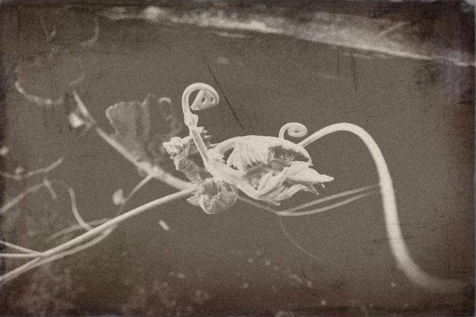

換語者店小二

茫茫茫茫到深更～
「就剩下我一個了。」
喧囂之後的深夜，酒精混著嘶吼的歌聲暈暈地在腦袋裡轉。
男子散亂著衣衫走在無人的街道，矗立的高樓頂破天際線，東倒西歪。破曉前的黑，還比不過他的眼圈。
「喝多了吧。」並肩傳來一句關心。男子啞啞的應了一句，「多，業績幾百萬還不夠多啊！」像哭的笑聲，臉上皺的比蟾蜍還難看。
「我賺夠錢了，你不要走。」男子重量掛在對方身上。
「噯、再走幾步就到啦。」
前方一個地下室的入口，亮著微光，像天空慢慢浮起的魚肚白，旁邊掛著不起眼的小招牌「故事柑仔店」。搖搖欲墜的。一隻皮鞋落在門外，男子踉蹌滾下階梯。
和男子並肩的那人身手俐落，從琳瑯滿目的貨架拿下一瓶血色的凍紅，「喝一口解酒湯」。
男人一口咕嚕而盡，空氣突然散出一股熟悉的味道，肌肉不自覺地放鬆，眼睛中有些迷惑。
「算你幸運，這是最後一瓶。」那人中性的嗓音，不知是男是女，穿著一身從夜空偷走的黑。
男人仍舊狼狽坐在地上，「這是....哪裡？雜貨店？」
貨架上各色玻璃瓶曖曖含光，其中夾雜著一隻磨白的舊鞋、一本翻爛的記事本、一個蠟燭即將燃盡的蛋糕、一顆消氣的足球。
那人捧著蛋糕，到男子面前說：「生日快樂，一事無成的中年人。」
男子用盡最後力氣吹熄燭火，從喉頭溢出的嗚咽聲逐漸轉大，吐出一地的無奈和不堪。
「沒事的，來到這裏的人總會哭得跟嬰兒一樣。」那人輕拍男子的背，拿走他應得的報酬。
「謝謝惠顧，祝您一夜安眠。」
那人向店裡走去，喃喃：「為了換你幾滴眼淚，我可是大費周章地佈置了一番。」
「今天這麼早就上工啦。」老闆娘娉婷地從簾子後頭走出來，天花板上漂浮的瓶子亮了起來，發出紫黃的光色。
老闆娘手裡抱著的嬰兒，安睡得像天使一樣香甜。「那個誰怎麼不來幫忙招呼客人吶。」
老闆從外頭的躺椅上倏地驚醒，「來啦。」
老闆接過今天開市第一單，到櫃檯後頭翻找簿筆記帳，冒出一句，「今天撿個路倒回來啊」。
「我也有同理心啊。」那人改扮裝束，拿上雞毛撢子、戴著頭巾，原來是一名頭髮極短的女子。
她俐落地收拾一地的狼狽，而後仔細整理貨架。逡巡著每一瓶玻璃內的光亮色澤，各種情緒在裡頭轉成小小的漩渦。
「店小二有時也兼跑業務呢」，她輕聲哼著歌，「太沉重啦，中年男子的哀傷。」
晨光透過窗簾散在床上，男人終於停止磨牙，他重重地嵌進床鋪。
自從女主人離開就不再撒嬌的貓咪，輕巧地跳上床，靈動的尾巴拍打男人的腳。
歡迎來到語巫們的柑仔店 ，
每天日落的魔幻時刻，為你說一個故事。
愛錢是天性
賺錢是本能
愛錢但存沒有錢就是換語者店小二
